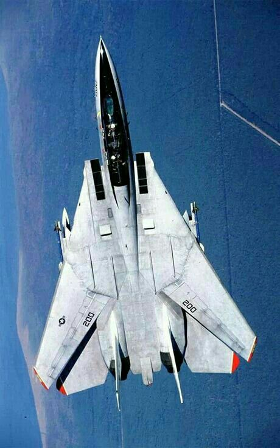
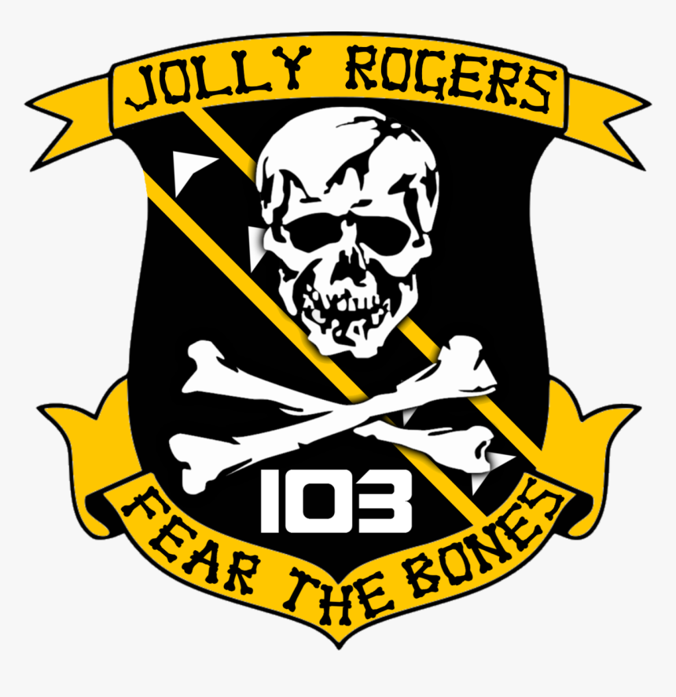

F-14
TomcatO Grumman F-14 Tomcat é um caça supersônico, impulsionado por dois motores, provido de asas de geometria variável e tripulado por dois elementos. Projetado e produzido pela Grumman Aerospace Corporation para a Marinha dos Estados Unidos, ele foi criado para suplantar o McDonnell Douglas F-4 Phantom II.
Foi provavelmente o caça de superioridade aérea mais importante da chamada guerra fria.
Responsável pela defesa aérea da frota, tinha como missão secundária a escolta de outras unidades aéreas em missão de ataque e já no final da sua vida operacional veio a revelar ser uma extraordinária plataforma para a função de ataque ao solo com precisão.
Já retirado do inventário da Marinha dos Estados Unidos, desde o terceiro trimestre de 2006, continua em atividade no Irã, contudo são desconhecidos o número de unidades operacionais, bem como em que condições se encontram.
“Nunca permita que o avião leve você a algum lugar onde sua cabeça não tenha chegado cinco minutos antes.”
- País de origem: EUA
- Fabricante: Grumman
- Tipo: Caça
- Vazio: 19.838kg
- Carregado: 27.700kg
- Tripulação: 2
Os primeiros F-14A começaram a ser entregues a marinha americana em Outubro de 1972, sendo que as duas primeiras esquadrilhas VF-1 e VF-2 foram entregues a base aérea de Miramar (Califórnia) e embarcadas no porta aviões Enterprise em Setembro de 1974.
No início dos anos 80 a Marinha americana pretendia adquirir um total de 521 aeronaves para equipar dezoito esquadrilhas, mesmo estando a produção limitada a 30 aeronaves/ano.